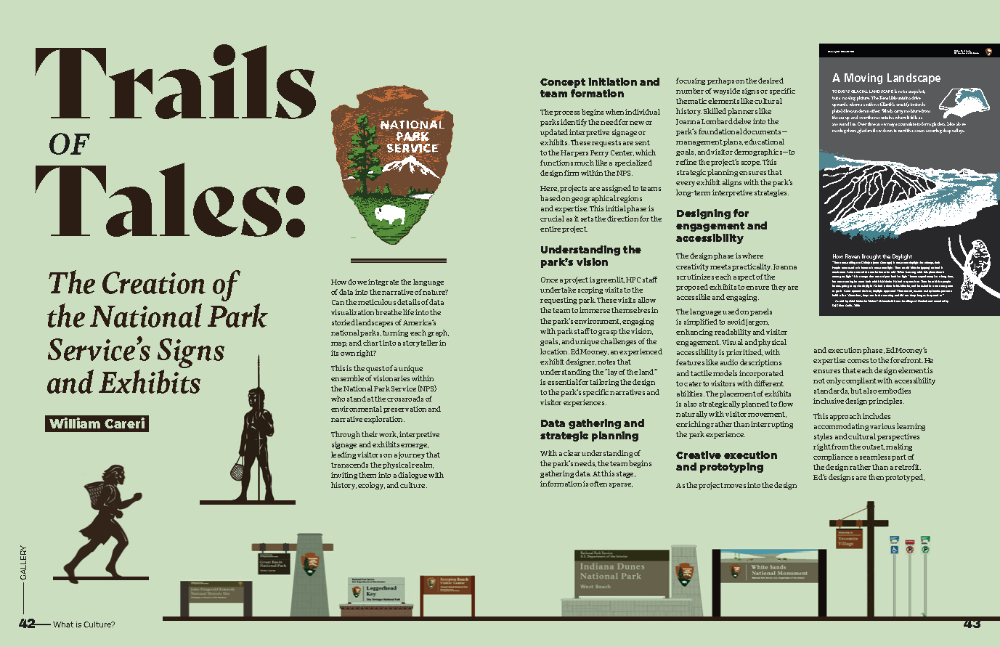
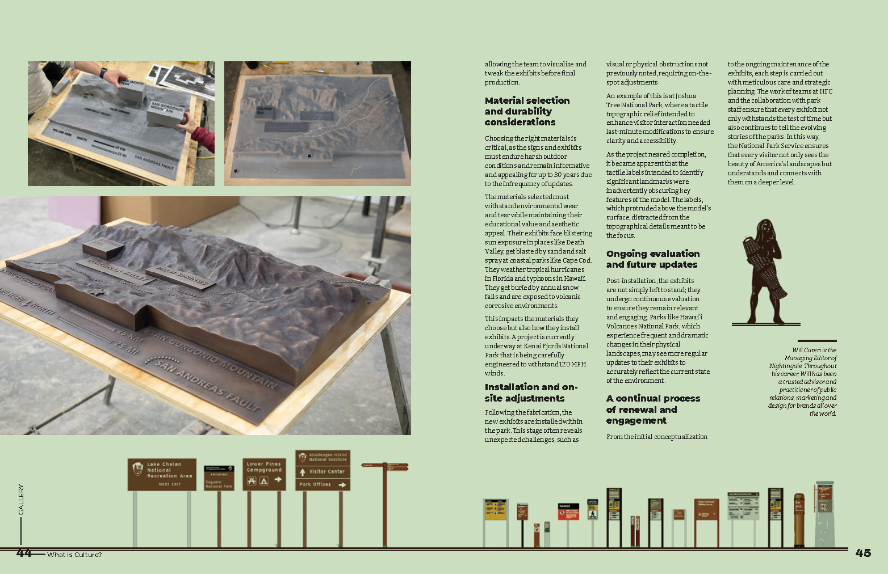

Trails of Tales
A look at how the National Park Service creates signs and exhibits for their parks. An interview with two members of the Harpers Ferry Center, see the process from beginning to end.
Published in Nightingale Issue 5: Nature. Design by Julie Brunet; editing by Teo Popescu. Photos provided by the National Park Service.
Eligible for purchase here.


